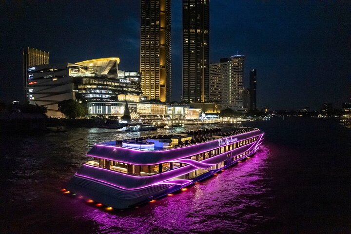
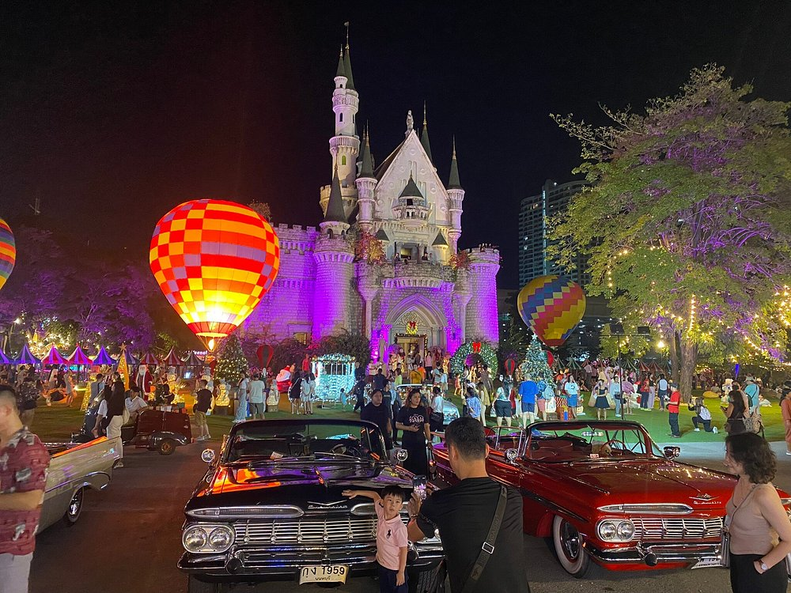
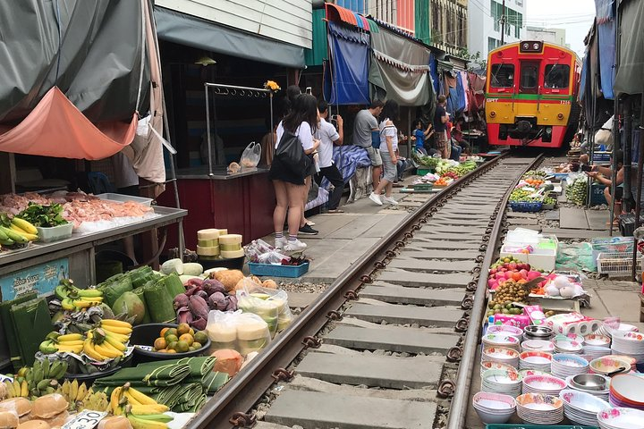
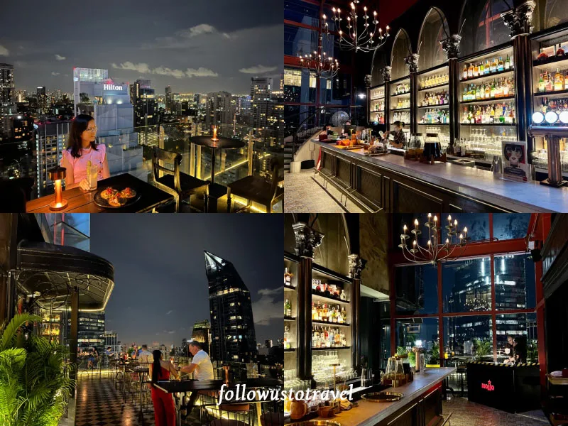
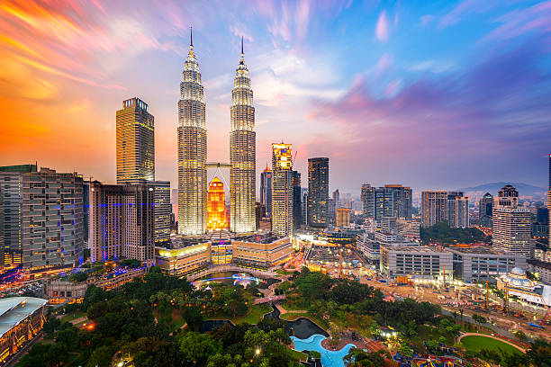
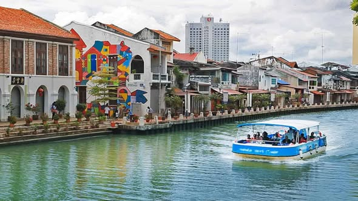
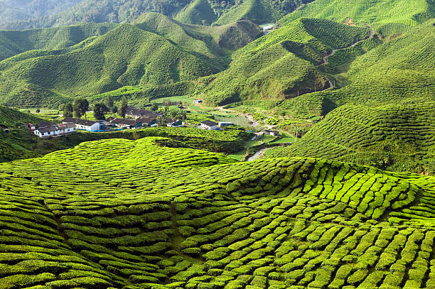
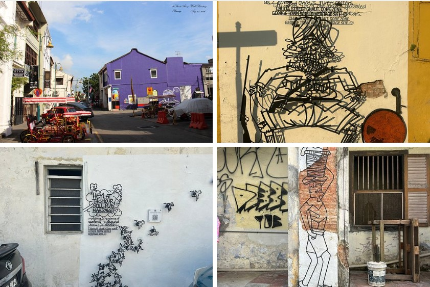
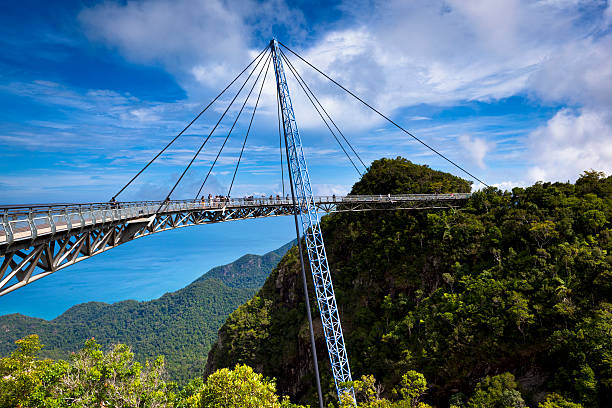

天使之城：曼谷 5日精华游
深入体验寺庙、夜市、购物与美食的完美碰撞
曼谷行程速览 (精准打卡版)
IconSiam/游船
耀华力路唐人街
乔德夜市 (Jodd Fairs)
美功铁路+SPA
Big C采购/飞大马
第一天 初识曼谷与湄南河夜色

上午/下午：抵达曼谷（素万那普BKK或廊曼DMK）。建议直接使用 Grab 打车前往市区酒店办理入住。稍作休息后，乘坐BTS(轻轨)到 Saphan Taksin 站，换乘免费接驳船前往巨型商场 IconSiam (暹罗天地)。这里一楼有超级还原的室内水上市场，可以吹着空调吃路边摊！
晚上：提前在预订平台定好湄南河公主号游船。在IconSiam码头登船，边吃自助晚餐边欣赏郑王庙、大皇宫的绝美夜景。
第二天 皇家寺庙巡礼与唐人街探秘
上午：早起（避开旅行团和高温）前往大皇宫与玉佛寺。务必注意着装（不可穿短裤、无袖衫）。随后步行5分钟到达卧佛寺，体验一次古法泰式按摩。
下午：在Tha Tien码头花5泰铢坐渡轮到对岸的郑王庙 (黎明寺)。强烈建议在门口花200泰铢租一套传统泰服拍照，纯白佛塔配泰服极度出片。
晚上：打车或坐MRT到 Wat Mangkon 站，直奔曼谷唐人街 (Yaowarat Road 耀华力路)。满街霓虹灯，路边全是顶级的街头海鲜大排档，推荐去吃“T&K海鲜”或“珍平酒楼”。
第三天 疯狂购物与超火网红夜市

全天 (若遇周末)：直奔恰图恰周末市场 (Chatuchak Weekend Market)。这是全球最大的跳蚤市场，拥有上万个摊位。衣服、香薰、手工艺品应有尽有。里面极大，看到喜欢的建议直接买，因为你很难再找到回去的路！
全天 (若遇平日)：如果不是周末，则改为前往 Siam商圈。逛 Siam Paragon（奢侈品）、CentralWorld（潮流品牌），顺路参拜位于十字路口的四面佛。
晚上：乘坐MRT到 Phra Ram 9 站，步行前往目前曼谷最火的乔德夜市 (Jodd Fairs)。整体环境干净、文艺风十足，必吃火山排骨、生腌海鲜和水果冰沙。
第四天 近郊奇观体验 / 高级SPA

白天：建议在携程或Klook报一个“曼谷近郊包车一日游”。先去美功铁道市场 (Maeklong)，近距离观看火车贴着菜摊开过、摊贩一秒收摊的奇景。随后前往丹嫩沙多水上市场 (Damnoen Saduak)，坐在手摇船上买热带水果和烤肉。
傍晚：回到曼谷市区，经过几天的暴走，今晚安排一次高端SPA放松身心。强烈推荐连锁品牌 Let's Relax（务必提前在网上预约好时间和门店）。
第五天 慵懒Brunch与大采购，飞往大马

上午：睡到自然醒。打卡素坤逸或通罗区 (Thong Lo) 的网红咖啡馆，曼谷的Cafe设计感极强，随便一家都很出片。
中午：去 Big C Supercenter（推荐CentralWorld对面的总店）进行最后的大扫荡。大量采购小老板海苔、冬阴功料包、芒果干、薄荷鼻通等平价伴手礼。
下午/晚上：根据航班时间前往机场（建议预留3小时，曼谷极其容易堵车）。乘机飞往马来西亚吉隆坡（飞行约2小时）。
多元色彩：大马 15日深度全景游
双峰塔、历史古城、避暑高地与免税海岛
大马15日路线速览 (一图看懂)

吉隆坡 (Kuala Lumpur)
第1至3天大马的繁华首都。从机场可搭乘 KLIA Ekspres 机场快线直达市区。
- 第一天: 抵达入驻，打卡双子塔 (KLCC)，晚上去阿罗街吃夜市。
- 第二天: 前往黑风洞爬彩虹阶梯。下午游览独立广场、打卡中央艺术坊。
- 第三天: 柏威年商圈购物，下午搭乘大巴前往马六甲（约2小时）。

马六甲 (Malacca)
第4至5天充满郑和下西洋历史印记与娘惹文化的古城，全程基本靠步行。
- 第四天: 游览荷兰红屋、圣保罗山教堂遗址。傍晚乘坐马六甲河游船欣赏夜景。
- 第五天: 漫步鸡场街寻觅美食。下午乘大巴返回KL，转车上金马仑高原。

金马仑高原 (Cameron)
第6至8天避暑胜地，常年15-20度，满山翠绿的茶园和草莓园。
- 第六天: 抵达后适应凉爽气候，下午去草莓农场自采草莓。
- 第七天: 报半日游进入苔藓森林探险。下午前往 BOH茶园喝正宗英式下午茶。
- 第八天: 坐大巴下山前往怡保，转乘ETS高铁抵达北海，换乘轮渡直接抵达槟城。

槟城 (Penang)
第9至11天马来西亚的美食天堂！满街都是会说闽南语/华语的老板。
- 第九天: 乔治市City Walk。穿梭老街寻找街头壁画，探访水上人家姓氏桥。
- 第十天: 上午前往极乐寺。下午乘坐缆车登上升旗山看日落。
- 第十一天: 逛光大(Komtar)周边。下午搭乘飞机或渡轮前往度假胜地兰卡威。

兰卡威 (Langkawi)
第12至14天免税度假岛，租车自驾是最好的游玩方式（中国驾照需翻译件）。
- 第十二天: 乘坐高空缆车，漫步建在悬崖边的天空之桥。傍晚在珍南海滩看日落。
- 第十三天: 报名红树林半日游，观看喂老鹰。下午在瓜镇免税店扫货。
- 第十四天: 报名跳岛游，前往孕妇岛等外岛浮潜或玩水上摩托。
返回吉隆坡 & 满载返程
第15天从兰卡威飞回吉隆坡机场(KLIA)。在大型免税店最后扫荡伴手礼(如旧街场白咖啡、巧克力)。结束20天的完美旅程！
行前必看：硬核避坑指南
交通 / 换汇 / 签证 / 过渡酒店全包含
必备软件 (App) 排行榜
预订平台推荐
- 1. 携程 (Ctrip)
首选！中国App在东南亚经常有超大额专属补贴，机酒常常比国外平台更便宜，而且支持微信支付宝，中文客服沟通无阻！ - 2. 同程旅行 (LY)
同样作为国内平台，经常会有特价机票和酒店捡漏，强烈建议和携程比价使用。 - 3. Agoda / Klook
Agoda 作为备用比价；Klook(客路) 则是用来预订当地门票、船票、一日游的神器。
打车与交通
Grab：东南亚滴滴，泰马通用！
✅ 完全支持现金支付：如果不想绑卡，在APP叫车页面的 Payment Method 中选择 Cash (现金) 即可，下车直接付纸币给司机，非常方便。
Bolt / InDrive：泰国民间打车神器，通常比Grab便宜20%，强烈建议备用。
支付工具
Touch 'n Go (TNG)：大马国民级电子钱包。可以直接绑定 Alipay (支付宝)，在大马买东西扫码支付极其丝滑，自动换算汇率。
支付宝/微信：在吉隆坡、槟城等华人较多的地方，很多便利店和商家直接用微信支付宝扫码即可。
签证与入境通关指南
换汇怎么最划算？
🇹🇭 泰国 (泰铢 THB)
市区首选：Superrich。橘色或绿色的招牌，用人民币现金换，汇率全泰最好。
机场直接找ATM机插银联卡取现即可，千万别在机场人工柜台换。
🇲🇾 马来西亚 (马币 RM)
市区商场兑换店汇率最好。其实不用换太多现金，大马的便利店、商场甚至夜市摊位，很多都支持直接扫支付宝或微信。